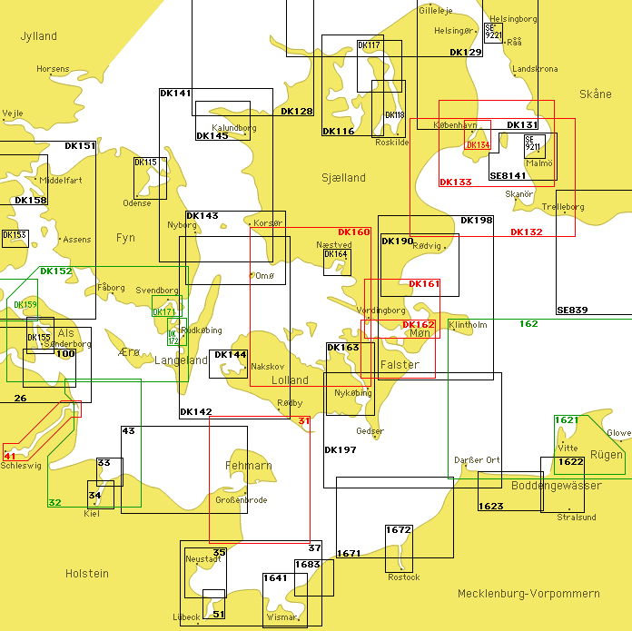

Übersicht 2004

Sofort verfügbare Karten
Verfügbare Karten sind in der obigen Übersichtskarte grün dargestellt.
- 32: Falshöft bis Kiel 1:50 000 (INT 1359)
- DK 152: Lillebælt, S-lige del og Farvandet syd for Fyn 1:75 000 (INT 1373)
- DK 159: Aabenraa Fjord 1:25 000 (INT 1374)
- DK 171: Svendborg Sund 1:10 000
- DK 172: Rudkøbing Løb 1:15 000
- SE F: Sydostkusten, Oskarshamn—Åhus (verschiedene Maßstäbe; nicht dargestellt)
Sowie ferner:
- DK C: Danmark med omgivende farvande 1:850 000 (nicht dargestellt)
Verzögert verfügbare Karten
Verfügbare Karten sind in der obigen Übersichtskarte grün dargestellt.
- 61: Die südliche Ostsee von Arkona bis Rixhöft (Rozewie) 1:300 000 (nicht dargestellt)
- 138: Bornholm bis Öland und Stolpebank (Ławica Stupska) 1:200 000 (nicht dargestellt)
- 159: Gewässer um Bornholm 1:100 000 (nicht dargestellt)
- 162: Gewässer zwischen Rügen und Møn 1:100 000 (INT 1342)
- 167: Gewässer um Öland und Gotland, südlicher Teil 1:200 000 (nicht dargestellt)
- 1621: Nördliche Rügensche Bodden 1:30 000
Interessante Karten
Interessante nicht verfügbare Karten sind in der obigen Übersichtskarte rot dargestellt.
- 31: Gewässer um Fehmarn, Heiligenhafen bis Dahmeshöved 1:50 000 (INT 1357)
- 41: Die Schlei von Schleimünde bis Schleswig 1:30 000
- DK 132: Sundet, S-lige del 1:75 000 (INT 1332)
- DK 133: Sundet, midterste del 1:50 000 (INT 1333)
- DK 134: Københavns Havn 1:12 500 (INT 1334)
- DK 160: Smålandsfarvandet, W-lige del 1:75 000
- DK 161: Smålandsfarvandet, NE-lige del 1:30 000
- DK 162: Smålandsfarvandet, SE-lige del 1:30 000
Sowie ferner:
- DK 114: Farvandet nord for Fyn 1:75 000 (INT 1377; nicht dargestellt)
- DK 141: Storebælt, N-lige del 1:75 000 (INT 1370)
- DK 143: Storebælt, Sprogø—Langeland 1:50 000 (INT 1369)
- DK 151: Lillebælt, N-lige del 1:75 000 (INT 1375)
- DK 158: Snævringen og Kolding Fjord 1:25 000 (INT 1376)
- DK 163: Guldborg Sund 1:30 000
- DK 197: Gedser Rev og Kadetrenden 1:75 000 (neuer Windpark)
- SE 9211: Malmö—Limhamn 1:12 500
Für „rund Seeland“ zusätzlich:
- DK 129: Kattegat, SE-lige del 1:75 000 oder DK 102
Sowie ferner:
- DK 128: Kattegat, Samsø Bælt 1:75 000 (INT 1379)
- DK 131: Sundet, N-lige del 1:75 000 (INT 1331)
Übersegler
Die folgenden Karten sind allesamt nicht verfügbar und nicht in der obigen Übersichtskarte dargestellt.
- 30: Kieler Bucht 1:100 000
- 36: Travemünde bis Gedser Odde 1:100 000 (INT 1352)
- 40: Sund, Hanöbukten bis Pommersche Bucht 1:250 000 (INT 1201)
- 64: Westliche Ostsee, Belte und Sund 1:300 000
- 3002: Südliche Ostsee westlicher Teil, westliche Ostsee, Belte und Sund 1:300 000
- DK 100: Kattegat 1:300 000
- DK 102: Kattegat, S-lige del 1:200 000 (INT 1301)
- DK 103: Bælthavet 1:200 000 (INT 1303)
- DK 104: Østersøen, Femern Bælt—Sundet 1:200 000
- SE 2: Östersjön 1:1 500 000
- SE 3: Östersjön 1:1 000 000
- SE 9: Skagerrak, Kattegatt och närliggande farvatten 1:500 000